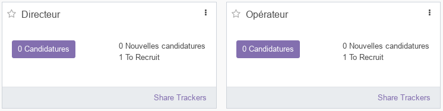
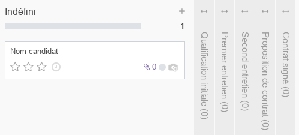
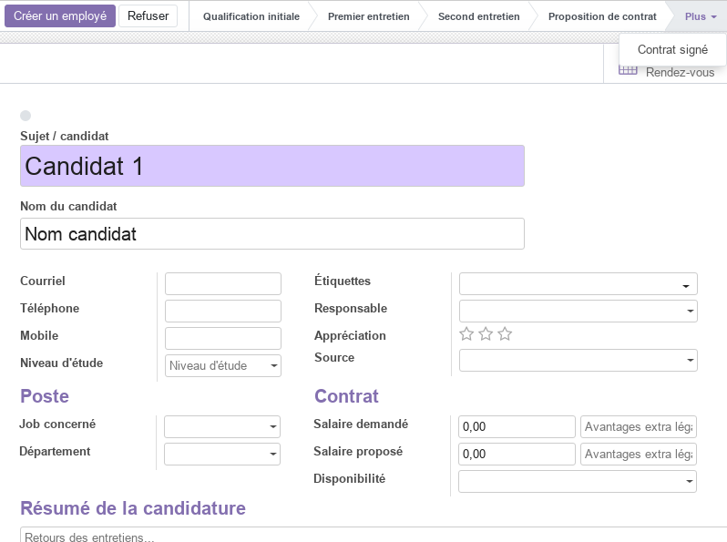

Module Recrutement
Ce document illustre les différentes fonctionnalités du module Recrutement d’odoo 13 community.
Présentation du module
Ce module est destiné à gérer le processus d’embauche de manière simplifié, de la recherche de candidat au contrat. il permet de :
d’organiser les offres d’emploi et les candidatures.
de configurez le tableau d’offres d’emploi, de faire la promotion ds offres et de suivez facilement les candidatures soumises.
de suivre chaque candidat et de créer une base de données de compétences et de profils avec des documents indexés.
de diriger directement les applications vers la adresse électronique.
donne le choix au postulant de vous contactent par e-mail ou en utilisent le formulaire en ligne.
d’utilisez une vue kanban et de personnaliser les étapes du processus de recrutement : préqualification, premier entretien, deuxième entretien, négociation, etc.
d’obtenir des statistiques précises sur le pipeline de recrutement.

Configuration (admin)
Cette section, réservée aux administrateurs, permet de définir les paramètres généraux du module, tel que les les postes, les départements et les types d’activités.
Configuration - Paramètres

L’option Publication en ligne active de nouvelles fonctionnalités permettant aux GRH de publier les offres d’emploi sur le site web (Odoo) de l’entreprise.
L’option Formulaires d’entretiens active de nouvelles fonctionnalités permettant aux GRH de créer des formulaires d’entretien qui seront renseignés directement par les demandeurs d’emploi. Ce module dépend du module Enquêtes.
Postes
Cette section, réservée aux responsables des ressources humaines, permet de définir les informations relatives aux postes occupés ou à pourvoir, tel que l’intitulé le département y relatif, le nombre d’employés supposés l’occupé et sa description.
 .
.
Pour Chaque poste, les GRH disposent d’un accès facile à toutes les informations utiles, tel que le nombre de candidats et les documents disponibles. Aussi, un processus en deux étapes y est associé (Recrutement en cours, Pas de recrutement) et qui peut changé d’état avec la commande Arrêter le recrutement.
Départements
Cette section, réservée aux GRH, permet de définir la structure et la hiérarchie de l’entreprise (directions, départments, services, …).

Types d’activités
Cette section permet de prédéfinir l’ensemble des activités liées au processus de recrutement (et d’autres processus), tel que les appels téléphoniques, l’envoi d’emails, les rendez-vous, …
Pour chaque activité, les paramètres suivants sont prédéfinis.

Candidatures
By Job Positions
Cette section donne accès un tableau de bord global mettant en évidence l’ensemble des postes à purvoir avec leurs statistiques.

Toutes les candidatures
Cette partie offre une vue en kanban de l’ensemble des candidatures en cours. Pour chaque candidature, on peut visualiser le nom du candidat, le nombre de docuements téléchargés, la photo, un status (couleurs rouge/vert) …

Pour chaque étape (colone) un ensemble de commandes est disponible : Plier, Tout Archiver et Tout Désarchiver. Ces colones représentent les étapes personnalisbales du processus de recrutement de l’entreprise.

Aussi, à partir du menu contextuel, on peut accéder directement aux paramètres de la candidature avec la commande Modifier et lui affecter une couleur distinctive en fonction de sont type par exemple. On peut aussi Supprimer le candidat ou Planifier un entretien.

En sélectionnant un candidat, on peut mettre à jours l’ensemble des informations y relatives tel que : le sujet, le nom, le courriel, le téléphone, le niveau d’études, le poste concerné, le salaire, …

Pour chaque candidat, une indication claire de sa position dans le processus de recrutement est affichée. Aussi, La commande Créer un employé permet de créer un enregistrement employé directement à partir des informations du candidat. La commande Refuser permet de cloturer la candiature.
Analyse
La partie analyse permet aux GRH de visualiser des vues synthétiques sous différentes formes (listes, tableau croisé ou graphes) de la situation des Recrutements.
Workflow

Plus de détails
Pour la collaboration sur les formulaires de ce module, consulter la fonctionnalité conversations.